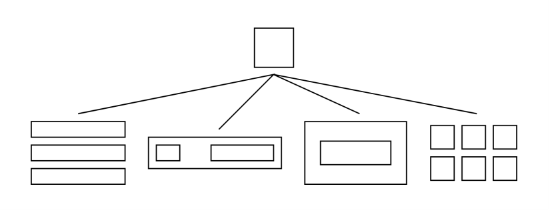
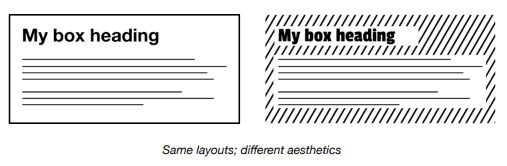
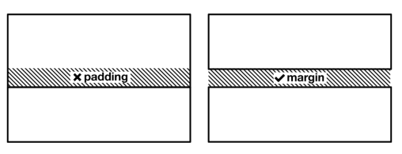
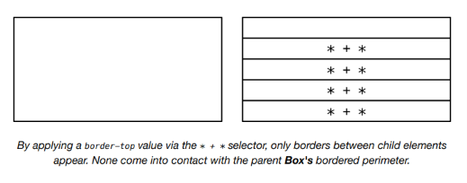
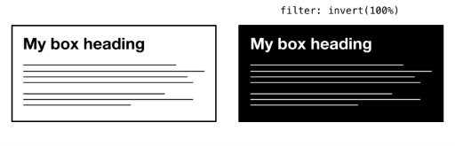
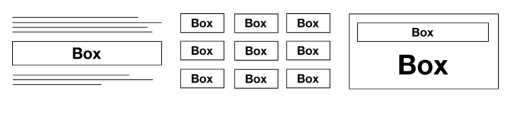
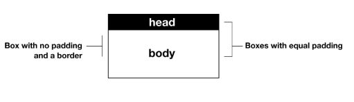

The Box¶
El problema¶
Como establecí en Boxes, cada elemento renderizado crea una forma de caja. Entonces, ¿cuál es el uso de un layout Box, encapsulado como un componente dedicado?
Todos los layouts subsiguientes se ocupan de ordenar cajas juntas; distribuyéndolas de alguna manera para que formen una estructura visual compuesta. Por ejemplo, el layout Stack toma una serie de cajas e inserta margen vertical entre ellas.
Es importante que al Stack no se le dé otro propósito que insertar márgenes verticales. Si comenzara a asumir otras responsabilidades, su descripción de trabajo se volvería un sinsentido, y las otras primitivas de layout dentro del sistema no sabrían cómo comportarse alrededor del Stack.
En otras palabras, es una cuestión de separar concerns ↗ (separación de intereses). Al igual que en ciencias de la computación, en el diseño visual beneficia a tu sistema dar a cada parte funcional una responsabilidad dedicada y única. El diseño emerge a través de la composición.

El rol de Box dentro de este sistema de layouts es encargarse de cualquier estilo que pueda considerarse intrínseco a elementos individuales; estilos que no son dictados, heredados o inferidos de los meta-layouts a los que un elemento individual pueda estar sujeto. Pero, ¿cuáles son estos estilos? Pareciera que podrían ser innumerables.
No necesariamente. Mientras que algunos enfoques de CSS te dan el poder (o el dolor, dependiendo de tu perspectiva) de aplicar cualquier estilo a un elemento individual, hay muchos estilos que no necesitan ser escritos de esta manera fragmentada. Estilos como font-family, color y line-height pueden ser heredados o aplicados globalmente, como se establece en Global and local styling. Y así debería ser, porque establecer estos estilo casa por caso es redundante.
Por supuesto, es probable que emplees más de una font-family en tu diseño. Pero es más eficiente aplicar estilos por defecto (o 'base') y luego hacer excepciones que estilizar todo como si fuera un caso especial.
Convenientemente, los estilos globales tienden a ser estilos relacionados con la marca (branding) — estilos que afectan la estética pero no las proporciones del elemento(s) en cuestión. El propósito de este proyecto es explorar la creación de un sistema de layout específicamente, y no estamos interesados en el branding (o la estética) como tal. Estamos construyendo wireframes dinámicos y responsivos. La estética puede aplicarse después.

Esto limita la cantidad de propiedades entre las que tenemos que elegir. Para reducir aún más este conjunto de propiedades potenciales, tenemos que preguntarnos qué propiedades específicas de layout son mejor manejadas por los elementos padre o ancestros del simple Box.
La solución¶
Margin es aplicable al Box, pero solo inducido por contexto — como ya establecí. width y height también deberían ser inferidos, ya sea por un valor extrínseco (como el ancho calculado por flex-basis, flex-grow y flex-shrink trabajando juntos) o por la naturaleza del contenido sostenido dentro del Box.
Piénsalo así: Si no tienes nada que poner en una caja, no necesitas una caja. Si tienes algo que poner en una caja, la mejor caja es una que tenga justo el espacio suficiente y nada más.
Padding¶
Padding es diferente. Padding penetra en un elemento; es introspectivo. Padding debería ser una opción de estilo en Box. La pregunta es, ¿cuánto control sobre el padding para nuestro Box es necesario? Después de todo, CSS nos ofrece padding-top, padding-right, padding-bottom y padding-left, así como el shorthand padding.
Recuerda que estamos construyendo un sistema de layout, y no una API para crear un sistema de layout. CSS en sí mismo ya es la API. El elemento Box debería tener padding en todos los lados, o en ningún lado. ¿Por qué? Porque un elemento con padding específico (y asimétrico) no es un Box; es otra cosa tratando de resolver un problema más específico. La mayoría de las veces, este problema se relaciona con agregar espacio entre elementos, que es para lo que sirve margin. Margin se extiende fuera del borde del elemento.

En el siguiente ejemplo, estoy usando un valor correspondiente al primer punto de mi escala modular. Se aplica a todos los lados y tiene el propósito singular de alejar el contenido del Box de sus bordes.
El modelo de caja¶
Como se estableció en Boxes, evitarás algunos problemas de tamaño aplicando box-sizing: border-box. Sin embargo, esto ya debería aplicarse a todos los elementos, no solo al Box nombrado.
La caja visible¶
Un Box solo es realmente un Box si tiene una forma similar a una caja. Sí, todos los elementos tienen forma de caja, pero un Box debería típicamente mostrarte esto. Los métodos más comunes usan ya sea un border o un background.
Al igual que padding, border debería aplicarse en todos los lados o en ninguno. En casos donde los bordes se usan para separar elementos, deberían aplicarse contextualmente, a través de un padre, como margin lo hace en el Stack. De lo contrario, los bordes entrarán en contacto y se 'duplicarán'.

Aplicando un
border-topa través del selector* + *, solo aparecen bordes entre los elementos hijos. Ninguno entra en contacto con el perímetro bordeado delBoxpadre.
Si has escrito CSS antes, sin duda has usado background-color para crear una forma de caja visual. Cambiar el background-color a menudo requiere que cambies el color para asegurar que el contenido siga siendo legible. Esto se puede facilitar aplicando color: inherit a cualquier elemento dentro de ese Box.
Forzando la herencia, puedes cambiar el color — junto con el background-color — en un solo lugar: en el propio Box. En el siguiente ejemplo, estoy usando una clase .invert para intercambiar las propiedades color y background-color. Las propiedades personalizadas hacen posible ajustar los valores específicos claros y oscuros en un solo lugar.
Inversión por filtro¶
En un diseño en escala de grises, es posible cambiar entre oscuro-sobre-claro y claro-sobre-oscuro con una simple declaración filter. Considera el siguiente código:
Debido a que --color-light es tan claro en 20% como --color-dark es oscuro en 80%, son efectivamente opuestos. Cuando se aplica filter: invert(100%), toman los lugares del otro. Puedes crear un theme switcher (alternador de tema) claro/oscuro ↗ con una técnica similar.

Cuando el tono (hue) está involucrado, también se invierte, y el efecto probablemente sea menos deseable.
En ausencia de un borde, un background-color es insuficiente para describir una forma de caja. Esto se debe a que los high contrast themes (temas de alto contraste) ↗ tienden a eliminar los fondos. Sin embargo, empleando un outline transparente se puede restaurar la forma de la caja.
¿Cómo funciona esto? Cuando no se está ejecutando un tema de alto contraste, el outline es invisible. La propiedad outline tampoco tiene impacto en el layout (crece desde el elemento para cubrir otros elementos si está presente). Cuando Windows High Contrast Mode está activado ↗, le da color al outline y la caja se dibuja.
El outline-offset negativo mueve el outline hacia el interior del perímetro del Box para que se comporte como un borde y ya no aumente el tamaño general de la caja.
Casos de uso¶
El caso de uso básico, y altamente prolífico, de un Box es agrupar y demarcar contenido. Este contenido puede aparecer como un mensaje o 'nota' entre otro contenido de flujo textual, como una tarjeta en una cuadrícula de muchas, o como el envoltorio interno de un elemento de diálogo posicionado.

También puedes combinar solo cajas para hacer algunas composiciones útiles. Un Box con un elemento 'header' se puede hacer a partir de dos cajas hermanas, anidadas dentro de otro Box padre.

El generador¶
Usa esta herramienta para generar CSS y HTML básicos. Proporciona la capacidad de crear cajas básicas de dos tonos, incluyendo temas claro-sobre-oscuro y oscuro-sobre-claro ('invertidos'). Consulta la sección La caja visible para más información.
La herramienta generadora de código solo está disponible en el sitio de documentación adjunto ↗. Aquí está la solución básica, con comentarios:
CSS
HTML
El componente¶
Una implementación de elemento personalizado del Box está disponible para descargar ↗.
API de Props¶
Las siguientes props (atributos) harán que el componente se renderice nuevamente cuando se alteren. Pueden ser alterados a mano — en las herramientas de desarrollo del navegador — o como sujetos del estado de la aplicación heredada.
| Nombre | Tipo | Default | Descripción |
|---|---|---|---|
padding |
string | "var(--s1)" |
Un valor CSS de padding |
borderWidth |
string | "var(--border-thin)" |
Un valor CSS de border-width |
invert |
boolean | false |
Si se debe aplicar un tema invertido. Solo recomendado para diseños en escala de grises. |
Ejemplos¶
Box básico¶
El Box viene con padding y border por defecto. El valor de padding está establecido al primer punto de la escala modular (var(--s1)) y el border-width usa la variable var(--border-thin).
Un Box dentro de un Stack¶
En el contexto de un Stack, al Box se le aplicará margin-top si está precedido por un elemento hermano.
Box con encabezado¶
Una implementación del ejemplo anidado de la sección Casos de uso. El atributo booleano invert invierte los colores usando filter: invert(100%).